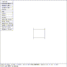
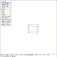
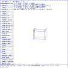

This tutorial illustrates the application of the SOL EDIT state to cylinder solids.
 Figure (esc-top): Top View of a Cylinder
mged> size 12
mged> in cyl rcc
Enter X, Y, Z of vertex: 0 0 0
Enter X, Y, Z of height (H) vector: 2 0 0
Enter radius: 1
mged>
Figure (esc-top) is the display of the cylinder solid when viewed from the top. Since the Z axis is perpendicular to the viewing screen, a view of all sides cannot be seen.
 Figure (esc-rot): A Rotated View of the Cylinder
mged> Twist ROTY knob clockwise and restore
mged> Twist ROTX knob counter-clockwise and restore
mged>
These actions generate a view, Figure (esc-rot) , that shows all sides.
 Figure (esc-sed): A Cylinder in Solid Edit State
mged> Select the ``Solid Illum'' entry in the button menu
mged> Move the mouse out of the menu area
mged> Click the mouse to enter SOL EDIT state
mged>
Figure (esc-sed) is the view that displays the menu for the SOL EDIT state. The point V is at the origin (0,0,0) in this example and is in the middle of the circle that contains points A and B. H is the point of the center of the circle that contains points C and D. The coordinates of H are the coordinates of the vector from V to H and represent the relative position of H to V. Mag is the magnitude of these vectors and is represented by the formula
Mag = sqrt( x + y + z )``H dir cos'' are the direction cosines of the vector H which is perpendicular to plane of the points A, B, and V. The coordinates of A are the coordinates of the vector from V through A. Mag is the magnitude of the vectors from V to A. The coordinates of B are the coordinates of the vectors from V through B. Mag is the magnitude of the vector from V to B. The values for c and d are the magnitudes of the vectors from the tip of vector H to the points C and D respectively. ``A x B dir cos'' represents the direction cosines of the vector ``A x B''.
{kind=link}
{kind=link}
{kind=link}